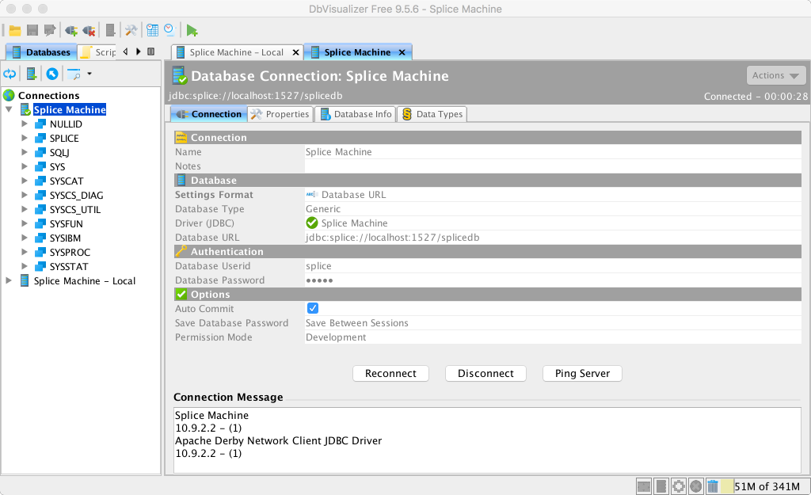
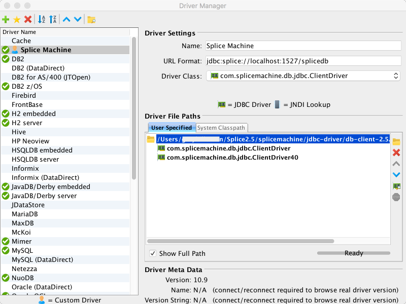
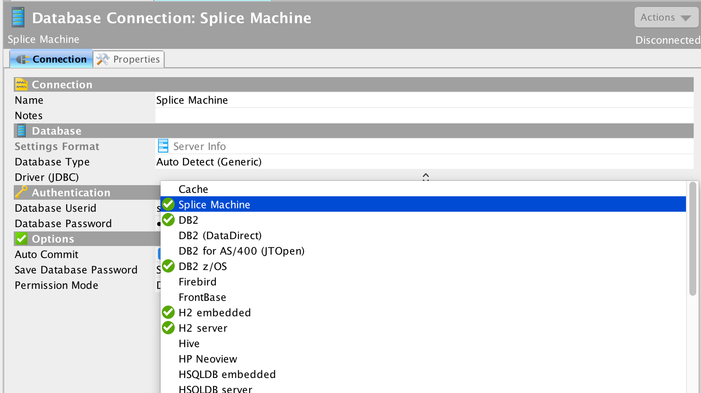

Connecting DBVisualizer with Splice Machine Using JDBC
This topic shows you how to connect DBVisualizer to Splice Machine using our JDBC driver. To complete this tutorial, you need to:
- Have Splice Machine installed and running on your computer.
- Have DBVisualizer installed on your computer. You can find directions on the DBVisualizer web site (https://www.dbvis.com); you can also download a free trial version of DBVisualizer from there.
Connect DBVisualizer with Splice Machine
This section walks you through configuring SQuirreL to connect with Splice Machine
-
Install DBVisualizer, if you've not already done so
-
Configure a Splice Machine connection in DBVisualizer
Follow the instructions in the next section, Configure a DBVisualizer Connection for Splice Machine, to create and test a new connection in DBVisualizer.
-
Connect DBVisualizer to Splice Machine
In DBVisualizer, open the connection alias you created and click the Connect button. Your database will display in DBVisualizer, and you can inspect objects or enter SQL to interact with your data.

Configure a DBVisualizer Connection for Splice Machine
Follow these steps to configure and test a new driver entry and connection in DBVisualizer.
- Start a Splice Machine session on the computer on which you have installed DBVisualizer.
- Open the DBVisualizer application.
-
Use the Driver Manager to create a new DBVisualizer driver entry.
Select Driver Manager from the Tools menu; in the Driver Manager screen:
- Click the green plus sign + button to add a new driver entry.
-
Name the driver and enter jdbc:splice://localhost:1527/splicedb in the URL Format field:

- In the Driver File Paths section, click User Specified, and then click the yellow folder icon.
- Navigate to and select the Splice JDBC Driver jar file. which you'll find it in the jdbc-driver folder under the splicemachine directory on your computer.
- Close the Driver Manager screen.
-
Create a DBVisualizer connection alias that uses the new driver:
-
Select Create Database Connection from the Database menu. If prompted about using the Wizard, click the No Wizard button.
-
Name the connection (we use Splice Machine), then click the empty field next to the Driver (JDBC) caption and select the driver you just created:

-
Enter the following URL into the Database URL field that appears once you've selected the driver:
jdbc:splice://localhost:1527/splicedb
Use localhost:1527 with the standalone (local computer) version of splicemachine. If you're running Splice Machine on a cluster, substitute the address of your server for localhost; for example:
jdbc:splice://mySrv123cba:1527/splicedb. -
Fill in the Userid (splice) and Password (admin) fields. Then click the Connect button. Your Splice Machine database will now display in DBVisualizer:
-